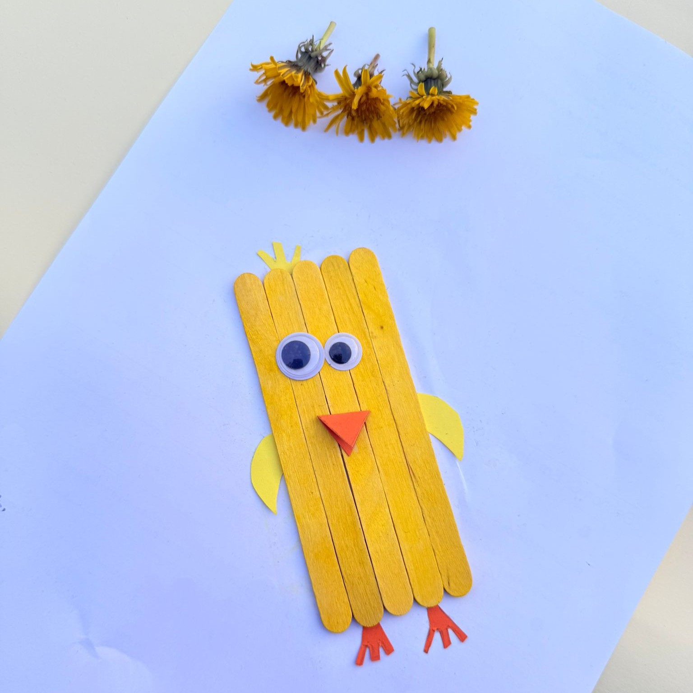
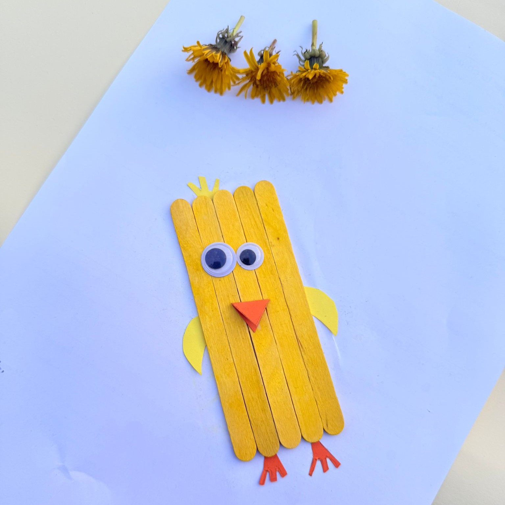

Introducing Creativity
Creativity is at the heart of early childhood education. It allows children to explore, imagine, experiment, and express themselves in different ways. Creativity is not only about making art or music; it is about how children think, solve problems, and try new ideas. In early learning, creativity happens every day when children play, build, draw, dance, or act out stories. It is through these activities that they make sense of their world and communicate their ideas (Howard & Mayesky, 2022).

The Curriculum of Art
Importance of Art in Facilitating Creativity
Art plays a vital role in young children’s creativity by offering open-ended opportunities for exploration, expression, and communication. It helps children represent their ideas and feelings, test possibilities, and solve problems using various media (Boyd & Cutcher, 2015). Engaging in artistic processes promotes imagination, self-confidence, and perseverance as children experiment with materials, colours, and forms. As Cutcher and Boyd (2016) highlight, art encourages collaboration and dialogue, helping children learn from and with others. Through both individual and group art experiences, children build a strong sense of identity and belonging (EYLF Outcomes 1 and 2).

Creativity Theories and Perspectives
Art education in early childhood is strongly influenced by constructivist theories and sociocultural perspectives. Vygotsky’s theory of social learning emphasises the importance of interaction, collaboration, and guided participation in creative activities. The Reggio Emilia approach views art as one of the “hundred languages of children,” encouraging multiple forms of expression and meaning-making (Cutcher & Boyd, 2016). Gardner’s theory of multiple intelligences highlights the importance of visual-spatial intelligence, acknowledging children’s capacity to think and communicate through images and design (Howard & Mayesky, 2022). These theories encourage teachers to provide environments and materials that foster curiosity, experimentation, and collaboration.
Resources, Materials, and Digital Technologies
To promote creativity in art, teachers can offer a variety of open-ended resources, including paints, pastels, clay, natural materials, fabric scraps, and recycled items (Boyd & Cutcher, 2015). Materials should invite exploration and experimentation rather than prescribe specific outcomes. Teachers can also integrate digital technologies like drawing apps, photography, and digital storytelling tools, enabling children to extend their creative expressions into multimedia formats (Howard & Mayesky, 2022). The key is to balance traditional and digital media, ensuring that all tools support children’s agency and creative intentions rather than limiting their possibilities.
Art Learning Experiences
Age Group: 0–2 years
Pom-Pom Balls
Babies discover soft pom-pom balls with their fingers, experiencing the textures, separating colors, and learning to hold. This develops sensory discovery and fine motor skills and encourages curiosity and early creativity (Howard & Mayesky, 2022).
EYLF Outcome 4: Children resource their learning through connecting with materials.
Bunny Face Craft
Little bunny faces are made using soft felt, cotton balls, and paper pieces. This fosters early mark-making, shape recognition, and decision-making as they place features (Howard & Mayesky, 2022).
EYLF 4: Children use creativity by experimenting with texture and shape.
Age Group: 2–3 years
Pop stick Chicks
Children create chicks using pop sticks, paper, and felt. They play with colour, texture, and shape, exercising fine motor skills and discussing individual design choices (Howard & Mayesky, 2022).
EYLF 4: Children develop creativity and confidence in using art materials.
Cliffy Crab
Children construct a crab using colored paper, googly eyes, and glue. They learn to identify shapes and parts and develop coordination and creativity (Howard & Mayesky, 2022).
EYLF 4: Children develop dispositions for learning such as curiosity and creativity.
Rainbow Pop sticks
Children create patterns using coloured popsticks, creating rainbows or abstracts. They learn about matching, sorting, and patterning in creative ways (Howard & Mayesky, 2022).
EYLF 4: Children use patterns and symbols to represent ideas.
Age Group: 3–5 years
Fluffy Fish Craft
Kids create textured fish using cotton balls, glitter, and colored paper. Kids combine materials and create their own work, sharing ideas through art (Howard & Mayesky, 2022).
EYLF 4: Children communicate ideas through visual arts.
Leaf Caterpillar
Children collect leaves and glue them onto card to produce caterpillars. They learn about nature patterns and texture as they construct a creature from nature (Howard & Mayesky, 2022).
EYLF 4: Children use natural materials in imaginative play.
The Curriculum of Drama & Puppetry

Importance in Facilitating Creativity
Drama and puppetry support young children’s creativity by giving them fun, safe ways to express their thoughts, ideas, and feelings. These activities help children act out real or imagined experiences, explore new ideas, and learn to solve problems. Drama and puppetry build confidence, communication skills, and help children understand their world (Tombak, 2014; Howard & Mayesky, 2022). Children work together, share ideas, and take on different roles. This helps them learn social skills and develop empathy. Drama and puppetry also support language growth as children plan, act out, and talk about their play (ETCH107, 2024).
Creativity Theories and Perspectives
Drama and puppetry link to Vygotsky’s theory, which highlights that children learn best through social interaction. When children act out ideas or use puppets together, they practise sharing, turn-taking, and problem-solving. The Reggio Emilia approach encourages children to express their ideas in many ways, including through role-play and puppetry — known as the “hundred languages of children” (Anderberg & Kratochvil, 2005). Creative dramatics is focused on the process, helping children build skills to explore, communicate, and understand their world (Anderberg & Kratochvil, 2005). Gardner’s multiple intelligences theory shows drama helps children who learn through movement and social interaction (Howard & Mayesky, 2022).
Resources, Materials, and Digital Technologies
Teachers can support drama and puppetry by offering dress-ups, hats, scarves, simple props (like boxes or chairs), and a range of puppets (sock, stick, finger, or hand puppets). These open-ended resources encourage children to create their own stories and characters (Howard & Mayesky, 2022). Teachers can also use storybooks to inspire role-play (Wanerman, 2010). Digital technologies, such as audio recorders or storytelling apps, can help children create and share their own stories, record puppet shows, or explore voices and sounds for characters (Anders, 2021). The key is to provide tools that allow children to lead their play and ideas.
Drama & Puppetry Learning Experiences
Age Group: 2–3 years
Popstick Chicks as Puppets
Children utilize popstick chicks as puppets, making chick noises and movements, and telling simple stories about their chicks. This promotes early communication and fantasy (Anders, 2021).
EYLF 5: Children interact verbally and non-verbally to express ideas.
Moo Cow Role-Play
Children mimic the behaviors of cows using sounds and movements. They learn role-play by mimicking grazing, mooing, or cow movements. This helps with dramatic expression and awareness of the body (Howard & Mayesky, 2022).
EYLF 4: Learning dispositions are established through imaginative play by children.
Cliffy Crab Story Play
Kids imitate crab movements with sideways walking and pinching fingers impersonating claws. They create simple stories of the adventures of the crab, promoting role-play and imagination (Howard & Mayesky, 2022).
EYLF 2: Children are connected with and contribute to their world through collaborative play.
Age Group: 3–5 years
Game with Cups Role-Play
Children pretend to use cups in pretend tea party, café, or shop play. Children assume server or customer roles and have conversations and social interactions (Wanerman, 2010).
EYLF 2: Children use role-play to build relationships and connections.
Here's our Drama Video -
Digital Evidence
Art Section
Pom-Pom Balls (Age Group: 0-2 years)


Pop Sticks Chicks (Age Group: 2-3 years)

 

Drama & Puppetry Section
Cliffy Crab Story Play (Age Group: 2-3 years)


Game with Cups Role-Play (Age Group: 3-5 years)

Reflections on Practice
The Popstick Chick Puppet Play for 2–3-year-old children worked well since the children were very interactive with the making of chick sounds and playing out the puppets' interactions with each other. They were outspoken in the employment of their voices and enjoyed creating small stories about where the chick was going or doing something. The puppets encouraged even the shy children to join in, facilitating communication development (Anders, 2021).
The Game with Cups Role-Play (3–5 years) also worked well. The children enjoyed pretending to shop as customers or serve tea. They used a great deal of language, took turns, and worked together to build their pretend play. It encouraged imagination and social growth (Wanerman, 2010). Modification in the activity of puppets is to provide a small stage or puppet theatre. This could enable the children to condense their narratives and offer more organization for their play. In the course of the cup role-play, some of the children overexcited themselves and had a hard time sharing sometimes. In the future, I would incorporate basic role cards (e.g., server, customer) in order to guide the play. Both activities could also be extended by having the children create their own props.
References
Anderberg, S., & Kratochvil, K. (2005). Rationale for creative dramatics and formal theatre in the classroom. The California Arts Project.
Visit LinkAnders, A. (2021). Theories supporting the use of puppets as pedagogical tool with young children. Universal Journal of Educational Research, 9(7), 1359–1368.
Visit LinkBoyd, W., & Cutcher, A. (2015). Learning from early childhood philosophy, theory and pedagogy: Inspiring effective art education. Australasian Journal of Early Childhood, 40(1), 91–98.
Visit LinkCutcher, A., & Boyd, W. (2016). Preschool children, painting and palimpsest: Collaboration as pedagogy, practice and learning. The International Journal of Art & Design Education, 35(1), 43–51.
Visit LinkDepartment of Education, Employment and Workplace Relations [DEEWR]. (2009). Belonging, being and becoming: The Early Years Learning Framework for Australia. Commonwealth of Australia.
Howard, R., & Mayesky, M. (2022). Creative activities and curriculum for young children (12th ed.). Cengage.
Tombak, A. (2014). Importance of drama in pre-school education. Procedia - Social and Behavioral Sciences, 143, 372–378.
Visit LinkWanerman, T. (2010). Using story drama with young preschoolers. Young Children, 65(2), 20–28.